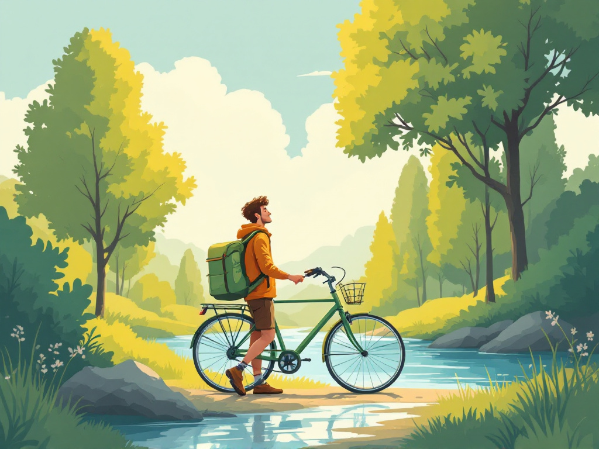

27/11/2024
5 Razones para viajar en grupo
Viajar en grupo ofrece experiencias únicas y ventajas que muchas veces pasan
desapercibidas. Estas son cinco razones por las que deberías intentarlo:
- Conexiones personales. Conocerás gente con intereses similares
y crearás
amistades
duraderas.
- Compartir gastos. Viajar en grupo puede ser más económico al
dividir transporte
y
alojamiento.
- Seguridad y apoyo. Es más fácil superar imprevistos cuando
estás acompañado.
- Diversión garantizada. Las anécdotas y momentos compartidos
hacen que cada viaje
sea
memorable.
- Organización eficiente. Los grupos suelen tener itinerarios
claros, evitando
estrés por
planificación.
30/09/2024
¡Amantes del teatro! Los mejores
destinos
Si el teatro es tu pasión, estos destinos ofrecen experiencias inolvidables para
disfrutar de obras, musicales y escenarios icónicos:
- Nueva York. El hogar de Broadway, con producciones de renombre
mundial como Hamilton o El Rey León.
- Londres. El West End británico combina tradición con
vanguardismo teatral.
- París. Experimenta el encanto del teatro clásico en un entorno
bohemio.
- Buenos Aires. La capital argentina sorprende con su variada
cartelera y teatros emblemáticos como el Colón.
- Tokio. Disfruta de espectáculos Kabuki y musicales innovadores
en una fusión única de tradición y modernidad.
02/09/2024
Cómo prepararte para un viaje temático
Los viajes temáticos son perfectos para sumergirte en una experiencia única. Para
sacarles el máximo provecho, sigue estos consejos:
- Investiga sobre el tema. Aprende sobre la historia, eventos y
actividades relacionadas con tu destino temático.
- Lleva lo esencial. Lleva ropa o accesorios adecuados al tema
(como disfraces en carnavales).
- Reserva actividades clave. Asegúrate de garantizar tu lugar en
experiencias populares como globos aerostáticos o eventos deportivos.
- Haz tiempo para lo inesperado. Aunque tengas un itinerario,
deja espacio para explorar y descubrir.
13/07/2024

Planificar viajes sostenibles
Viajar de manera sostenible puede tener un impacto positivo en las comunidades
locales y el medio ambiente. Considera estas estrategias:
- Elige transporte ecológico. Tren o autobús antes que vuelos
cortos.
- Apoya a negocios locales. Hospédate en alojamientos gestionados
por residentes.
- Reduce residuos. Lleva tu botella reutilizable y evita
plásticos de un solo uso.
- Respeta la fauna y la flora. Observa sin interferir y sigue las
normas locales.
03/06/2024
Sobrevivir a los largos viajes de avión
Los vuelos largos pueden ser desafiantes, pero con la preparación adecuada, serán
más llevaderos:
- Elige asientos con antelación para mayor comodidad.
- Mantente hidratado y evita el alcohol en exceso.
- Lleva entretenimiento variado: libros, música, películas.
- Haz estiramientos en el pasillo para mejorar la circulación.
- Usa tapones para los oídos y antifaz para dormir mejor.